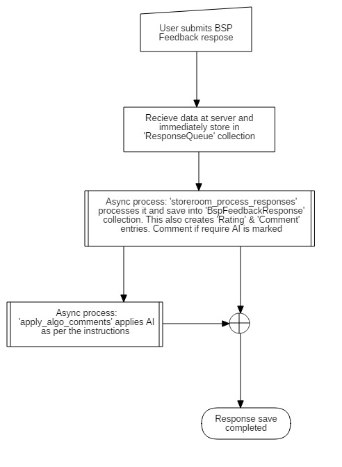

Models¶
List of database models (MySQL & MongoDb) for feedback app.
-
class
feedback.models.BspFeedbackForm(*args, **kwargs)¶ Model to define a Business or Service Point feedback questionnaire for an organization. An organization can create any number of feedback questionnaire ad attach them to a BSP.
This model inherits
form_builder.models.Formmodel since most of the properties for a feedback questionnaire are same, almost complete. At database layer, this means this table has unique foreign key to Form table, so for every ‘BspFeedbackForm’ there will be a ‘Form’. All couple tables with ‘Form’ remains valid for this model also.Points:
Feedback questionnaire has no state cycle. They remain as free floating questionnaire. Any BSP attached to it uses this for displaying questionnaire form.
This nature allows few flexibilities:
- All BSPs are not constrained to have common questionnaire. Different types of BSP or different categories of same BSP type can have different questionnaire. For example, restaurants for a state can have separate questionnaire tahn BSPs for some other state.
- Also, this allows flexibility to change./update questionnaire as per need.
Hence, a feedback questionnaire is not directly accessible that means it is always accessed via BSP. The BSP defines what questionnaire to display as per the association.
Feedback has no specific audience. It is open to everyone.
Since BSPs can be associated to various questionnaires or a BSP might change its questions midway, this introduces some complexity in maintaining question uniqueness across questionnaires. It is likely to happen that for example; a question with label ‘cleanliness’ might be present in two questionnaires with slightly different context such as answer type. One can be a star rating, while other can be a multiple choice single select question. Whatever the case may be, while displaying a consolidated report, same label can have different type and answer values like in this case numeric and string.
So, any changes made in questions or questionnaire itself will not effect a BSP feedback response. Whatever was captures obsolete or not will be displayed.
Fields guidelines:
titleis although mandatory, but is not used in feedback. In this case, title will be used as name of the form for user usage only.user_noteswill be used to describe questionnaire for user own usage only.
Authors: Gagandeep Singh
-
get_attached_bsps()¶ Method to return all BSPs attached to this feedback form.
Returns: List< market.models.BusinessServicePoint>
-
class
feedback.models.BspFeedbackResponse(*args, **values)¶ Model to store BSP feedback response. It inherits all properties of
form_builder.models.BaseResponse.Flow for BSP Feedback Response save:
Authors: Gagandeep Singh